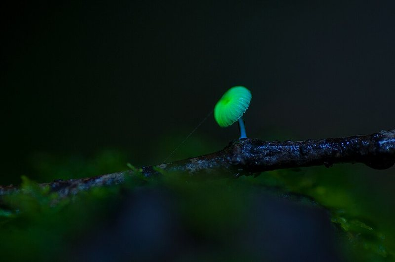
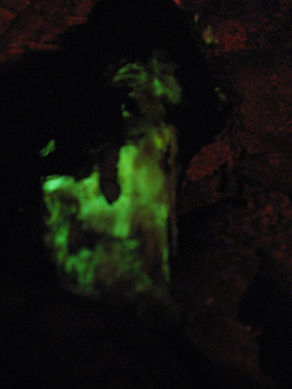
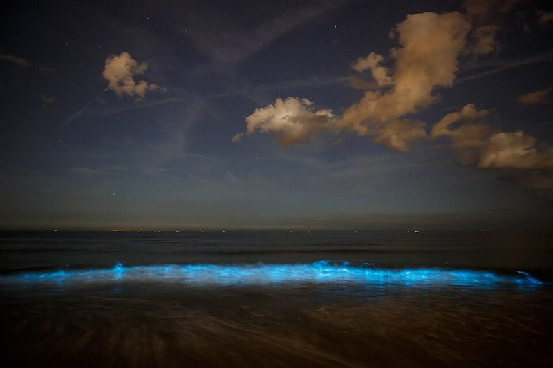

off the Faery Yurt · down through the glowing mushroom · lit by living things
behind the faery yurt · down through the glowing mushroom
Glow Wild Hollow
Every light down here belongs to something alive.
Down through the gills of the glowing mushroom in Helen’s yurt is a hollow at night that runs down to the sea. There is no moon here and no lamp, and nothing is lit for you: every light belongs to something living, making it for its own reasons. Most of the hollow is dark, and the dark is part of it.
Cold light
Making your own light has a name, bioluminescence, which means living light.


- A living thing that makes its own light does it with a chemical reaction: a substance called luciferin meets oxygen, helped along by an enzyme called luciferase. (Kew)
- It is called cold light because it gives off very little heat, and it can be blue, green, yellow or red. (Kew)
- People have written about it for a very long time: more than two thousand years ago, Aristotle noted fungi, and the scales and eyes of fish, shining in the dark. (Kew)
- Much about it is still not known. A light may help something get away from whatever is hunting it, find food, or find a mate. (Kew)
- Most of the living things that glow live in the sea. (Kew)
Foxfire, or fairy fire
The old log on the slope glows green where fungi are growing through it. Brew and Stew, out on the campgrounds, is lit the same way, by a glow growing in its own logs.


- More than a hundred kinds of fungi are known to glow. (Kew)
- The glow of fungi in rotting wood is called foxfire, and also fairy fire. (Wikipedia)
- Some glow mostly underground, in the fine threads they grow through soil and wood. (Kew)
- Nobody knows for certain why fungi glow. The light may draw in insects that carry their spores away, or warn off animals that would eat them. (Wikipedia)
- Honey fungus is one of the glowing fungi that grow in the UK, though glowing fungi are rarely seen here. (Kew)
- Foxfire lit the compass and the barometer in the Turtle, an early submarine built in the American Revolutionary War, until cold weather stopped it glowing. (Wikipedia)
Glow-worms in the grass
On the other slope, a light sits at the top of a grass stem and does not move. It is waiting.

.jpg){kind=link}
- Glow-worms are not worms. They are beetles. (Kew)
- It is the females that glow, to bring the males to them. (Kew)
- They live in meadows and grassland across Britain, and shine on summer nights. (Kew)
- In the First World War, soldiers read maps and messages by the light of glow-worms, without giving away where they were. (Kew)
- There are fewer glow-worms where the night is lit up by streetlights and buildings. (Kew)
Sea sparkle
At the foot of the hollow the sea is dark until something moves it. Run a finger or a pointer through the water and it lights where it moved, then goes dark again, or press Stir the water. At Gentle the waves light all at once and stay lit, still, until you stir them again.

.jpg){kind=link}
- Sea sparkle is a tiny living thing, a single cell, that lights up when the water around it moves. (Kew)
- It can be found round the coast of the UK, and has been photographed lighting up the waves at Dunraven Bay, Southerndown, in South Wales. (Kew)
- Fish, jellyfish and plankton in the sea make their own light too. (Kew)
A jellyfish that lights up
Out past the waves drifts a crystal jelly, almost clear, so you only see its edges. Press it, or press Touch the jellyfish, and it lights up green, then goes dark again. At Gentle it stays lit until you press it again.


- The crystal jelly lives in the Pacific Ocean off the west coast of North America, from the Bering Sea to southern California. (Wikipedia)
- Its light starts out blue, made by a protein called aequorin, and a second protein in the jelly, green fluorescent protein, turns that blue into green. (Wikipedia)
- Osamu Shimomura, Martin Chalfie and Roger Tsien shared the 2008 Nobel Prize in Chemistry for their work on that green protein. (Wikipedia)
- The rainbow that runs along a comb jelly is not its own light at all. It is light scattered by the rows of tiny combs it swims with. (Wikipedia)
Glowing back: fluorescence
Not everything that glows makes its own light. The lichen at Looming Rocks, out on the Outskirts, glows back this way under the lamps.


- Fluorescence is a different thing. It is not a chemical reaction: a living thing takes in light and gives it back in a different colour. (Kew)
- Human eyes cannot see most natural fluorescence without ultraviolet light, though many animals can. (Kew)
- Mushrooms, mosses, lichens and some small animals fluoresce. (Kew)
Films of the glow
Living light, filmed by the people who went out at night to find it: in the wood, and under the sea. Every film says how long it runs before you press, plays where it hangs or up on the hollow’s screen, and nothing reaches YouTube until you press. These films are other people’s, and some show fireflies flashing; what happens inside another site’s player is not this room’s to hold.
Nothing is on the screen. Put a film up from either shelf.
In the wood
-
A glowing underground network of fungi - Attenborough's Life That Glows: Preview - BBC
BBC · 4 May 2016 · 2:03
Fungi glowing through the floor of a wood at night, from David Attenborough's Life That Glows.
-
Glow-in-the-Dark Mushrooms: Nature’s Night Lights | National Geographic
National Geographic · 18 February 2015 · 2:13
Mushrooms glowing green in the dark.
-
Glow worms glowing on Stockbridge Down, Hampshire - National Trust. ©BBC Inside Out
London and South East National Trust · 22 August 2018 · 0:24
Glow-worms shining in the grass on Stockbridge Down, in Hampshire, filmed for the BBC.
-
David Attenborough Shines a Light on Glowing Animals | 4K Nature Documentary
Terra Mater · 7 May 2026 · 51:26
David Attenborough's whole film about living light, from fireflies and glowing mushrooms in the woods to the deep sea.
Under the sea
-
Deep Sea Creatures Exhibit Bioluminescence | Blue Planet | BBC Earth
BBC Earth · 18 May 2009 · 2:18
Animals of the deep sea lighting up in the dark, from Blue Planet.
-
Bioluminescence in the deep sea: How and why do animals create their own light?
MBARI (Monterey Bay Aquarium Research Institute) · 18 January 2022 · 4:07
How and why animals in the deep sea make their own light, from the people who go down and film them.
-
See a Glowing Plankton Bloom in California's Big Sur | National Geographic
National Geographic · 6 March 2018 · 0:47
Waves glowing blue with plankton on the coast of Big Sur, in California.
-
Crystal Jellyfish Are Clearly Awesome!
Monterey Bay Aquarium · 23 January 2019 · 1:40
Crystal jellies, the jellyfish in this hollow, at the Monterey Bay Aquarium.
-
The Lovely Lobed Comb Jelly
Monterey Bay Aquarium · 31 October 2012 · 1:28
A lobed comb jelly at the Monterey Bay Aquarium.
-
Why Does This Sea Glow in the Dark?
PBS Terra · 18 September 2023 · 8:27
Why the sea glows in the dark, from PBS Terra.
Chosen for Helen Edgar, 28 October 2026, each checked on its own watch page and each on its own channel on YouTube: BBC, National Geographic, London and South East National Trust, Terra Mater, BBC Earth, MBARI (Monterey Bay Aquarium Research Institute), Monterey Bay Aquarium and PBS Terra. None of them is affiliated with Stimpunks, and nothing of theirs is hosted here.
Where the light was read
Most of what is here was first read in “How nature glows wild”, by Chloe Agar, for Grow Wild, at the Royal Botanic Gardens, Kew, 30 October 2025, and the rest in Wikipedia’s articles on foxfire, the crystal jelly and comb jellies, on 27 October 2026. Every sentence here is ours, written for this room, and every fact says where it was read. The drawings are ours too, and every light in them belongs to something alive. The photographs are their photographers’, each credited under it, and the films are their makers’, on their own channels.
Job marker — a glow-worm shining at the top of a grass stem
You have found a job marker. The Adventurer’s Guild is a shopfront on the street, and it posts jobs that send you round these rooms. Take the code below to its board and that job is done. Nothing here is scored, nothing expires, and one is a perfectly good number of jobs to do.
The job: A light in the grass
Quest code: GLOWWORM